Automation Hub (Web-Based Platform)
Script distribution and version inconsistency across NOC engineers causing operational inefficiencies.
Designed and implemented a solution to eliminate script distribution and versioning issues within NOC operations, using a centralized web-based automation platform.
This project represents the evolution of earlier standalone automation tools into a unified and scalable platform. Initially, automation tools were distributed as separate executable files, which led to version inconsistencies and operational inefficiencies. This platform transformed the approach into a centralized system accessible via a web interface.
- Centralized execution of NOC automation tools via web interface
- Eliminated version mismatch issues across team members
- Enabled on-demand execution of scripts without local installation
- Supported both daily operational tools and advanced automation workflows
- Multi-user system with per-user isolated execution environments
- Secure credential management with encryption
- Real-time logging and output generation
- Downloadable results (Excel, logs, reports)
- Solved major distribution and versioning challenges for automation tools
- Improved collaboration across NOC teams
- Enabled scalable and maintainable automation framework
- Reduced dependency on local environments and manual updates
- Reduced MTTR during incidents
- Improved troubleshooting consistency across shifts
- Enabled faster decision-making in outage scenarios
- Reduced dependency on repetitive manual CLI operations
Instead of distributing multiple script versions manually, NOC engineers can now access all tools from a centralized platform, execute tasks instantly, and retrieve consistent results across the team.
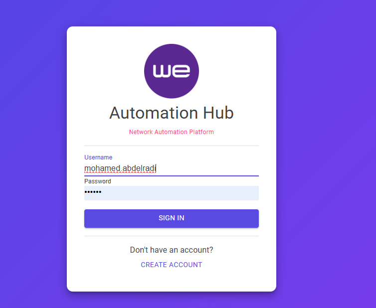
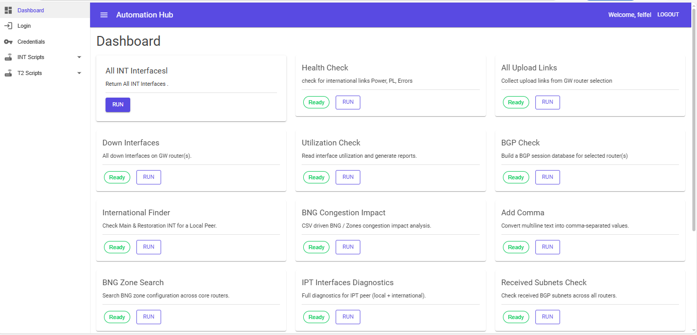
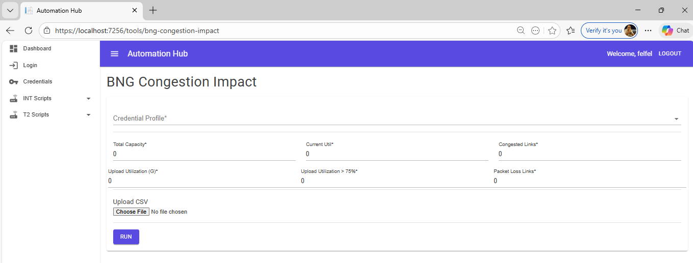
IP Core Automation Hub (Database)
Developed a centralized automation platform by integrating multiple standalone Python scripts into a unified GUI-based application.
Originally built as separate executable tools, these scripts were later consolidated into a single interface using AI-assisted development, enabling easier access, usability, and operational efficiency for NOC engineers.
- Automatically collects network data from multiple routers across the network
- Builds dynamic datasets for different use cases:
- BGP neighbors and VRF mapping
- International IP lookup
- Interface utilization and traffic analysis
- Upload links monitoring
- Integrated multiple standalone automation scripts into a single GUI application
- Generates structured output in Excel format with timestamp
- Supports filtering and selective input of network nodes
- User-friendly interface for easy operation by NOC engineers
- Reduced manual data collection time significantly
- Eliminated human errors in network data gathering
- Improved operational efficiency and decision-making speed
- Enabled faster troubleshooting and better visibility across the network
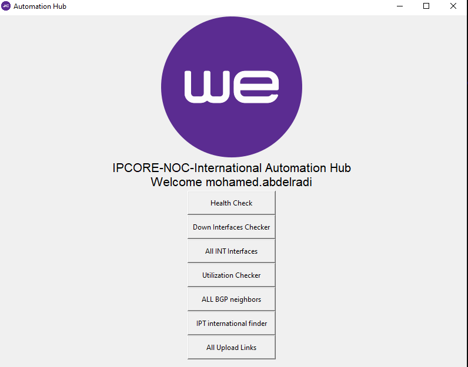
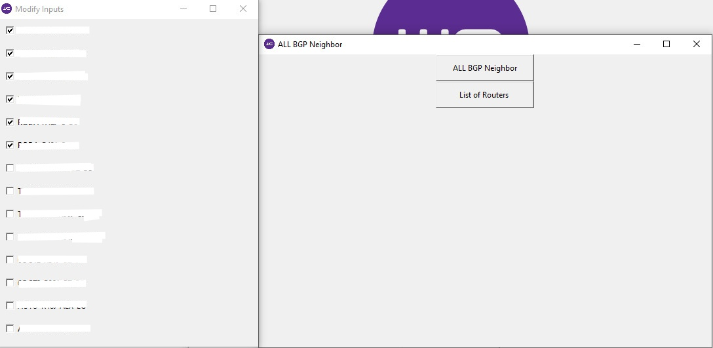
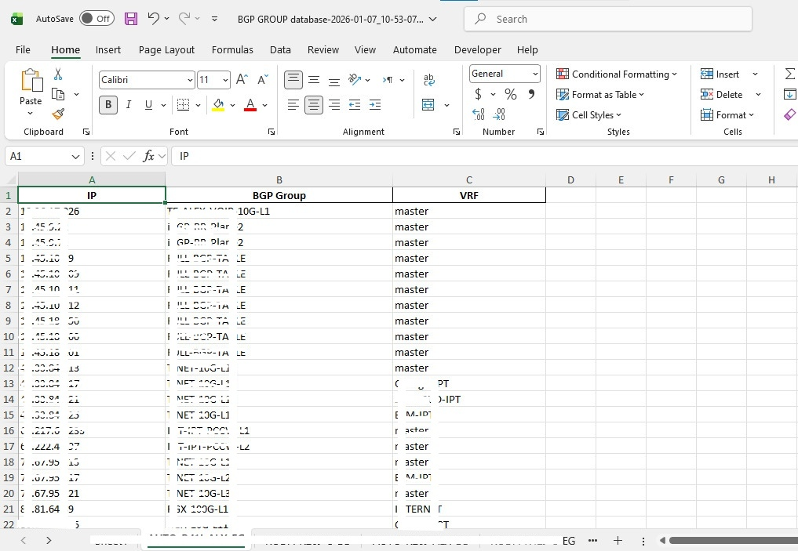
NOC Daily Automation Tools
Developed a set of daily-use automation tools designed to simplify and accelerate common NOC operational tasks.
The solution consists of multiple Python scripts integrated into a unified GUI, categorized based on functionality to support different user needs — from simple formatting utilities to advanced troubleshooting tools.
- Automated repetitive daily tasks performed by NOC engineers
- Categorized tools based on use cases (daily ops vs. advanced analysis)
- Quick-access utilities for common operations such as data formatting and lookup
- Advanced troubleshooting tools that generate comprehensive diagnostics for network links:
- End-to-end link analysis with automatic initial troubleshooting
- Collects BGP status, interface statistics, latency tests, and error rates
- Generates complete diagnostic report to support faster issue resolution
- Additional utilities: data formatting, search tools, quick network checks
- Results delivered in structured output (text/PDF-style reports)
- Significantly reduced time spent on daily operational tasks
- Standardized troubleshooting steps across the team
- Improved consistency and accuracy in network diagnostics
- Enabled faster incident handling and reduced MTTR
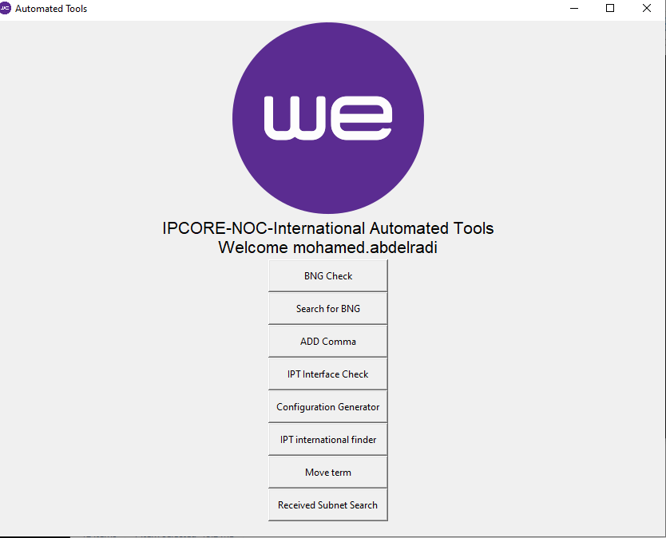
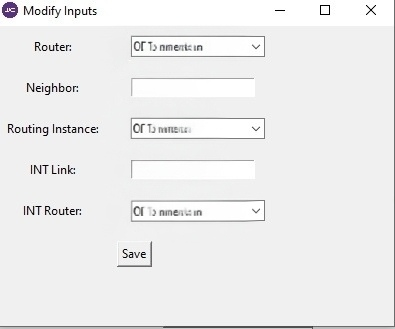
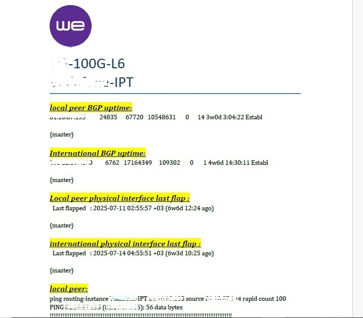
Restoration Guard — Network Capacity & Change Impact Platform
Developing a web-based platform designed to support NOC decision-making in managing backup links, outage handling, and capacity planning.
The system aims to eliminate manual tracking methods (e.g., personal notes or spreadsheets) and replace them with a centralized, data-driven solution for evaluating network readiness and change impact.
- Centralized outage management with impacted and restoration links tracking
- Link directory system for organizing network links by customer and zone
- Time-based analysis to evaluate link usage and availability
- Visualization of network capacity using charts and graphs
- Decision-support for capacity planning, change management, and backup link availability
- Enables forecasting network state during planned changes
- Full backend integration with live network data
- Advanced forecasting and simulation features
- Improved data accuracy and automation
- Enhanced UI/UX and reporting capabilities
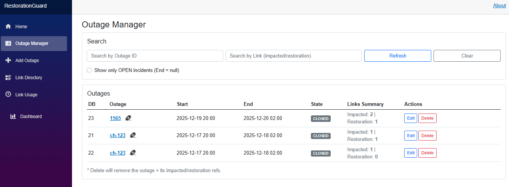
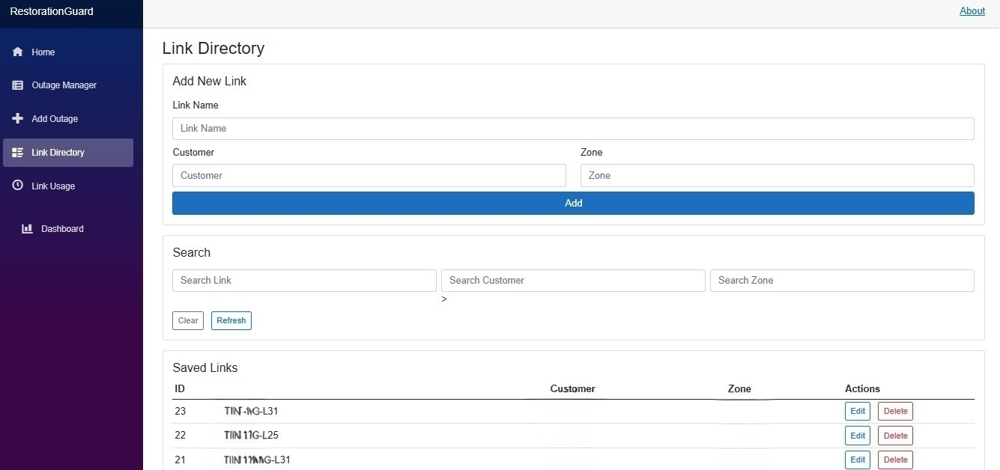
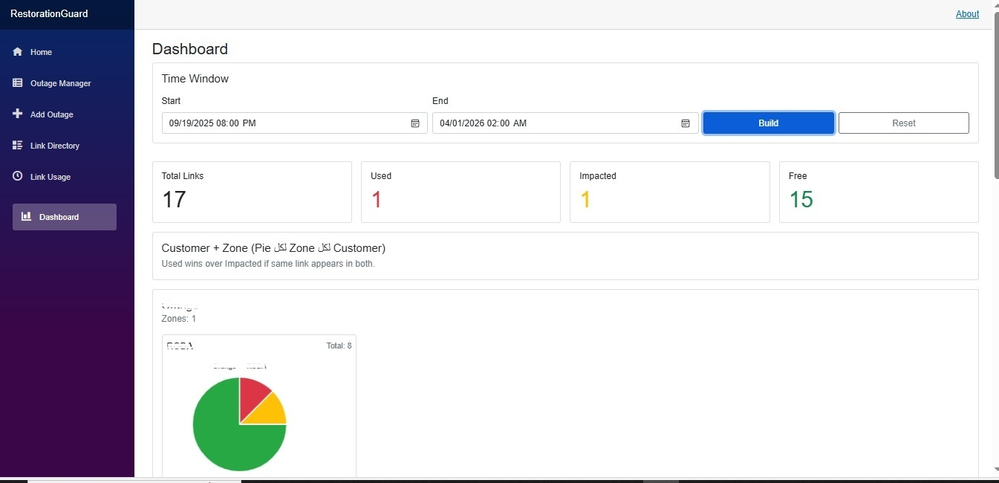